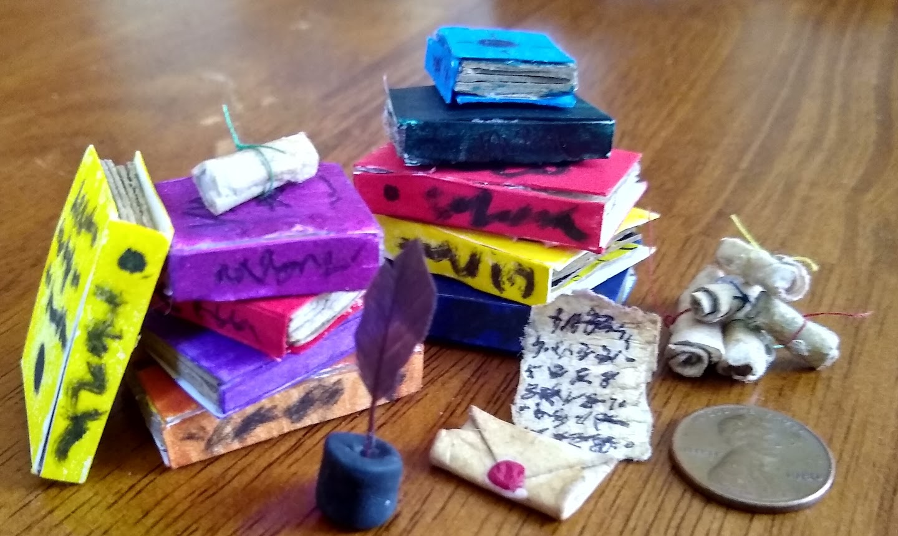
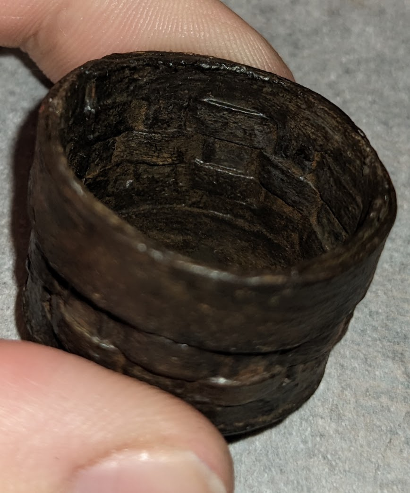

When people hear that I make miniatures, they often think I mean sculpting things out of clay, or perhaps 3D printing things to paint.
While both of those ideas sound fun, I've never been good with clay, and I don't have a 3D printer. My miniatures are mostly made of cardboard, trash, hot glue, and acrylic paint.
My methods may not be the most elegant, but I believe my work speaks for itself.
2019...

The earliest miniatures I can find photos of are from this small collection of books and other items you might expect on a fantasy-style desk.
I only vaguely remember making these, since it was 7 years ago at this point. What I remember most was being very proud of them.
The books were made of cardboard from cereal boxes, with the outside colored in Sharpie. I remember wishing after I finished I had used paint, since the colors were brighter than I wanted, but being too lazy to change it.
I was most happy with the quill and ink, as well as the mini envelope. The quill was from an actual scrap feather I found somewhere, while the inkwell was made of air-dried clay that I colored black with Sharpie. The envelope was paper that I folded like you would a real envelope, then added a tiny dab of hot glue which I painted to make the wax seal.
A basket
I made this basket by cutting very exact sized pieces of watercolor paper, painting them brown with acrylic paint, then weaving them together. I added a small wire handle by poking holes in the sides.
I also used a bit of chalk pastel shavings to add highlights once the basket was together, which I sealed in with mod podge.
This is actually probably one of the nicest methods I've ever used when making miniatures. None of it was made of trash, and there's not even hot glue!

A small street
This was my most ambitious miniatures project (or perhaps project, period) to date. I estimate that the whole thing took around 250-300 hours.
I created a set of three houses on a street, built out of cardboard and hot glue, lit by a string of dollar-store fairy lights, and held together with hopes and dreams.
To start, I made each house out of cardboard (and popsicle sticks for accents), with their backs open. The windows are made of plastic bags covered in hot glue (the plastic bags were too thin on their own.) Each house was painted with acrylic paint, and styled to look faux-medieval. Once the base paint was on, I added cracks and stains to make it look more alive.
Once each house was in place, I used a piece of styrofoam to carve out the stones in the street. This was very messy and took ages, but I was very pleased with how it came out. Using acrylic paint to darken the shadows in the cracks was important to add depth to the scene, as the ground looked fake and flat before.
With the houses and street in place, I added a ton of fake moss from the craft store, as well as green paint to add to the overgrown effect. This helped cover up a few of my mistakes, and was very effective in getting the look I was going for.
The last thing I added was lighting. I had a single string of fairy lights which I ran below the street into each house. The candle outside the houses was also from the string of fairy lights, which I stuck out through the wall and covered in hot glue to add a flame shape. I also cut a hole in the ceiling and had the remaining fairy lights in a bundle up there, since there was no ambient light and parts of the houses were hard to see without it. This looks awful if you look too close, but it's not super noticeable.
Once the lights were in, the entire thing got covered in a box, which was painted black on the inside to hide the fact that it was such a small area. The very outside of the box got covered in a nice poster board, to hide any remaining cardboard.
In the end, the whole thing looks best in the dark, which is maybe not a great sign, but I am still very proud of it and happy with the knowledge I gained while making it. I will absolutely be making something like this again when I have more time.